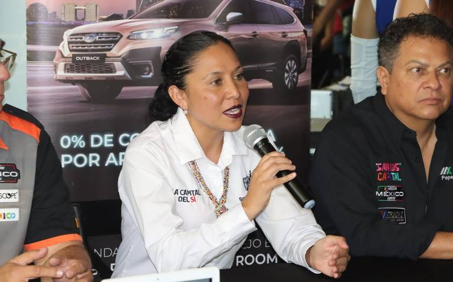

El popular sistema de inteligencia artificial generativa ChatGPT dio a sus usuarios respuestas peculiares y sin sentido durante horas entre martes y miércoles, sin que hasta ahora se conozcan las razones del fallo. OpenAI, la empresa matriz de ChatGPT, no explicó qué le sucedió a su herramienta estrella, considerada ya un referente del sector tecnológico.
Los proyectos de infraestructura recientemente inaugurados por la administración estatal no tendrán retrasos, como se han tenido en otras obras, con lo que en cuatro meses podría estar siendo inaugurada la vía alterna a la carretera 57.

Refirió los casos de la prolongación Salk, así como de la ruta alterna hacia la zona industrial, “de las que sabemos que sus zonas de trabajo se encuentran en áreas de escurrimientos naturales, que provienen desde la Sierra de San Miguelito en la zona sur de la ciudad”.
En el marco del Día Internacional de las y los Guías de Turistas, la directora de Turismo Municipal, Claudia Lorena Peralta Antiga, les pidió que divulguen a la ciudad de San Luis Potosí y que se enteren que forma parte de la UNESCO, del Camino real Tierra Adentro y que cuenta con otras distinciones que la ponen por encima de muchas otras capitales. En su intervención en la ceremonia de graduación del Diplomado de Formación de Guías de Turistas Generales, que se realizó la tarde de este miércoles en Palacio Municipal, destacó que desde 2005 no había egresado generación de guías de turistas. La marca turística más importante del mundo, que es la UNESCO, y “nosotros la tenemos, por ser ciudad patrimonio y ciudad del aprendizaje”, y adelantó que se escogió sede del Congreso Nacional e Iberoamericano de Guías de Turistas, en septiembre de este año; en el que se espera romper record de asistencia. Explicó que los graduados del diplomado son guías culturales, que fueron formados por docentes de la licenciatura en turismo sustentable de la Universidad Autónoma de San Luis Potosí.
